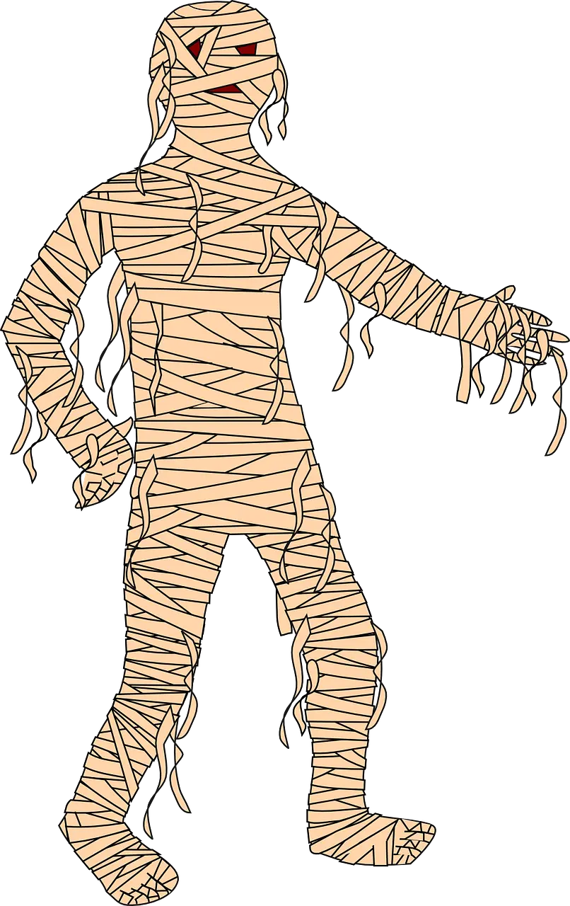
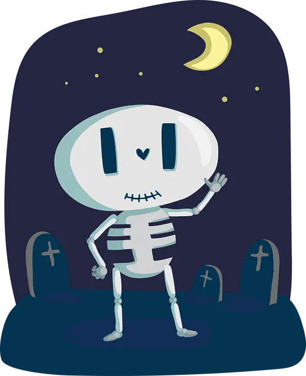
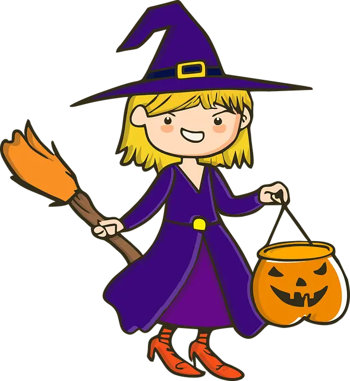
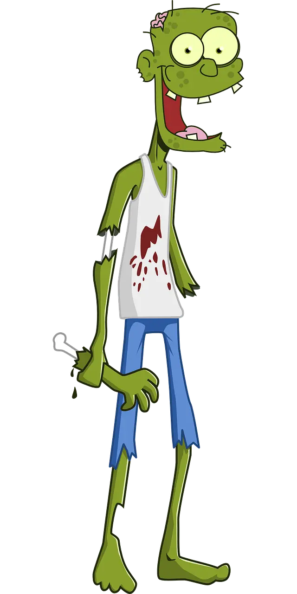

MonsterNannys
- Vi skapades för barnens skull.
Monster skapades just för barnens skull. Detta vill vi dra nytta av
genom att skapa en tjänst, för just era barn! Hos oss på MonsterNannys
hittar du ett brett urval av utbildade och trygga barnvakter i hela
Stockholm med omnejd. Vi har erbjudit barnpassning sedan 1873 för alla
åldrar, så att du alltid kan hitta ett monster som fungerar bra ihop
med din familj.
Vi som jobbar här
Spökis
MonsterNanny/Kundservicemedarbetare
spoket@monsternanny.com
Spökis är en riktig veteran och har arbetat hos oss sedan början
av 1900-talet. Redan från början var Spökis intresserad av att
bygga stabila och trygga relationer mellan monster och människor
och bestämde sig därför för att fokusera på kundservice.
Herr Snigel
MonsterNanny/VD
herrsnigel@monsternanny.com
Herr Snigel är MonsterNannys grundare och VD. Han föddes 1850 och
när Herr Snigel var blott 5 år så gav hans barnvakt honom en
felblandad magidryck. Detta ledde till att Herr Snigel, som från
början var en människa, blev förvandlad till ett monster. Det var
just därför som år 1873 Herr Snigel skapade MonsterNannys, för
barnens skull.

Mumien
MonsterNanny/Rekryterare
mumien@monsternanny.com
Vår senaste nyrekryt är Mumien som brinner för barnpassning. Hon
är expert på kurragömma och massa andra roliga lekar.

Jack Skeletor
MonsterNanny/PR-ansvarig
jackskeletor@monsternanny.com
Jack är en riktig favorit bland barnen och har arbetat hos oss i
nästan 50 år. Utöver sitt jobb som MonsterNanny ser Jack även till
att vi som företag har en bra arbetsmiljö.

Häxan HiaHia
MonsterNanny/Inköpare
haxanhiahiatrollskogen@monsternanny.com
Denna Häxa känner nog mången barn igen då hon tidigare umgåts en
del med Bamse. Häxan Hiahia är expert på att skapa roliga
trollerishower för era barn och älskar att förvandla öron till
morötter.

Zoom
MonsterNanny/HR-chef
zoom@monsternanny.com
Zoom har arbetat hos oss på MonsterNannys i ca 80 år och har under
den tiden skapat ett gediget nätverk av återkommande kunder. Se
gärna till att mata Zoom regelbundet så att inga olyckor uppstår.